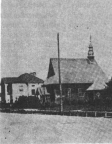

Смутные времена упадка
Знаменитый век просвещения, как известно, имел и другую, обратную черту в историческом развитии Речи Посполитой, так как именно во второй половине 18 века начался упадок страны,междоусобицы дворянских родов и группировок. В печально известных войнах между конфедерациями участвовало большинство шляхты, хотя вопрос об участии дрогичинцев в сеймовых партиях и политических союзах пока остается открытым, так как до конца не выяснено, на стороне каких конфедераций (вооруженных политических союзов) они выступали в те трагические для государства годы.Смутные времена раздора совпали в Речи Пасполитой с периодом величайшего подъёма культуры, который ярко проявился в истории Дрогичина.В 1749 году Михаил Ожешко, пинский маршалок сойшовый построил на восточной окраине Дрогичина деревянный Свято-Михайловский костёл. (В наши дни это деревянная часть молодёжного центра). Храм завершал комплекс строений Францисканского монастыря. За костёлом располагался дворик с овальным прудом, в центре которого был островок. Дальше к югу располагались деревянные хлевы и свирны, а с западной стороны от костёла находилась деревянная постройка келий.

Святомихайловский костёл 1930 г.
Священикам Францисканцам в Дрогичине давались земельные владения, в числе которых был фольварок около деревни Дуброва с приписанными к монастырю крепостными крестьянами.С самого начала своего существования монастырь стал играть значительную роль в духовной и просветительской жизни местечка. Позднее, в 1801 году он стал центром католической парафии. Слова наставлений, книжность, образованность францисканцев, европейский уровень культуры содействовали распространению идей Просвещения на Дрогичинской земле.Выдающиеся просветительские труды Ожешков проявились в делах других представителей династии. Так, в 1750 году на восточных пределах Дрогичинского фольварка в Винче Людвиг Ожешко построил каменную Свято-Духовскую униатскую церковь в стиле барокко. Калистрат Ожешко возвёл новую церковь в Осовцах в 1770 году. В 1765 году Иосафат Цехович, подскарбий пинский, передал на содержание философской школы в Жировическом монастыре 25 тысяч злотых, полученных с родового Дрогичинского фольварка.Приблизительно в конце 18 столетия на конце Староселья, за болотистыми местами урочища Смуга была построена новая Свято-Николаевская церковь. Известно, что в ней хранилось икона Святого Николая, которая считалась целительной. Святой был изображён на полотне, натянутом на липовую доску, в полный рост, одетый в серебряную ризу, с книгой в левой руке. Во время пожара 1827 года церковь сгорела, однако икона «изнесена была в пожару невредимою»Позднее икону Святого Николая торжественно перенесли в Свято-Сретенскую церковь, построенную в 1863 году. К сожалению икона была утрачена в 1915 году во время Первой мировой войны.Большое влияние на дрогичинских верующих в 18 веке оказывала близость Тороканьского монастыря в деревне Именин и Троицкого в Антополе.Ярким доказательством высокого уровня духовной жизни в Дрогичине является тот факт, что на 1500 человек белорусов и около 700 евреев в местечке и его окрестностях было две церкви, монастырь с костёлом и две синагоги. Есть сведения, что среди мещан и крестьян Дрогичина было достаточное число грамотных людей.